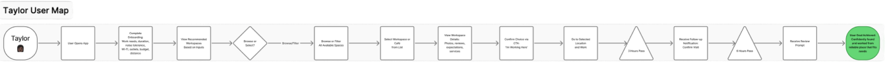
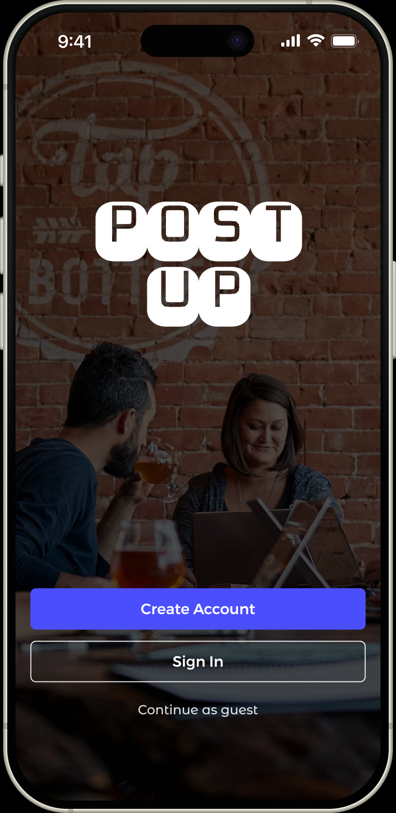
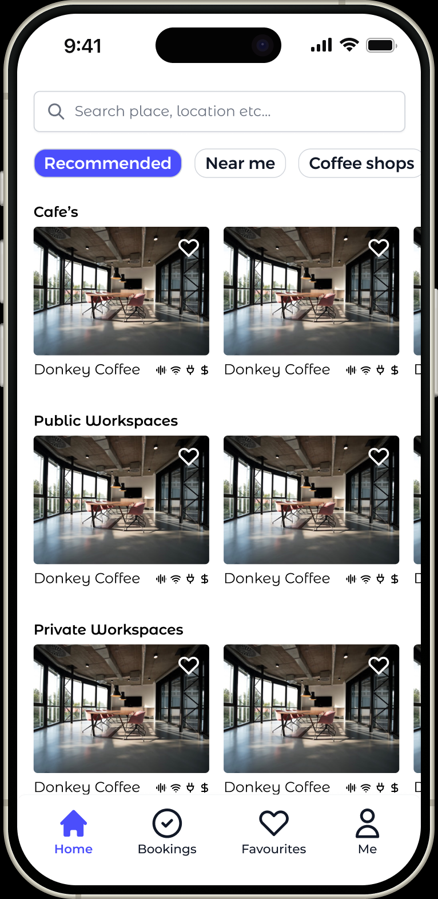
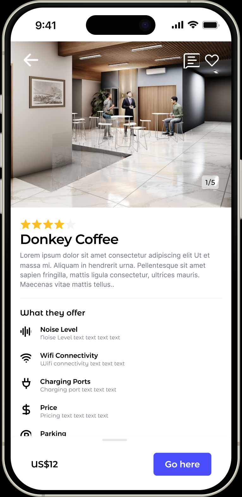
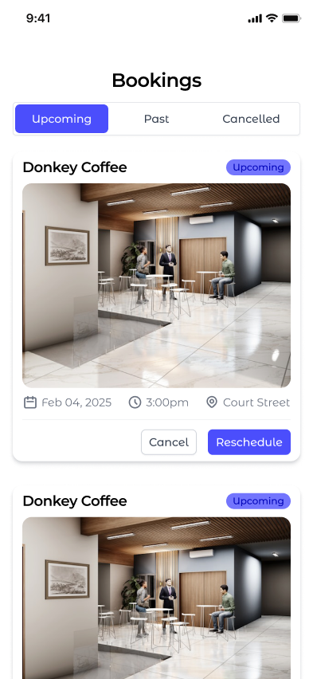
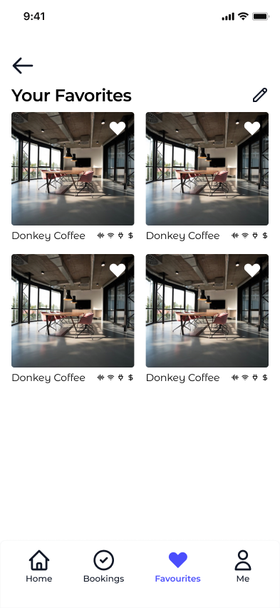

PostUp
PostUp was an MFA studio project, and I was the UI/UX designer from problem framing through to final screens over two months. I designed a mobile app to help remote workers and students find workspaces they can trust before they leave home. Existing platforms rate places on aesthetics and general reviews, while these users care about wifi strength, noise level, outlet access, and real pricing. I mapped the full user flow and designed the landing screen, the home screen, and the detail view. Because users decide whether to visit before they ever open a detail page, I put most of my effort into the home screen and designed a comparison card that answers the key practical questions at a glance. Feedback from users taught me that great design has to serve aesthetics and logistics together.
View in figma (opens in a new tab)Case Study03/05
The problem isn't finding spaces.
It's trusting them before you go.
01
THE PROBLEM
Existing platforms optimize for aesthetics and general ratings. Remote workers and students need something different: reliability, Wi-Fi strength, noise level, outlet access, real pricing. Predictability and not discovery is the core need.
02
THE CONSTRAINT
The challenge was to design an app that allows users to understand what a workspace truly feels like before visiting. The app needed to present practical, work-focused information in a minimal and intuitive way while supporting different user priorities such as budget, noise tolerance, and proximity. The experience had to be simple enough for quick decisions yet detailed enough to build trust for users.
03
THE APPROACH
The home screen carries most of the cognitive load. Users make a decision to visit before they ever open a detail page. Designing the comparison card to answer the key questions at a glance was the central design problem.
SITE MAP

SELECTED RESPONSIVE SCREENS02/02
Swipe to see more screens →



MORE SCREENS


REFLECTION
Aesthetics and logistics are not the same.
I went in prioritizing visual clarity. Users came back asking for logistics. That is the lesson PostUp taught me, great design has to serve both. The tension between a minimal comparison screen and the dense information users actually need is still the core design problem.